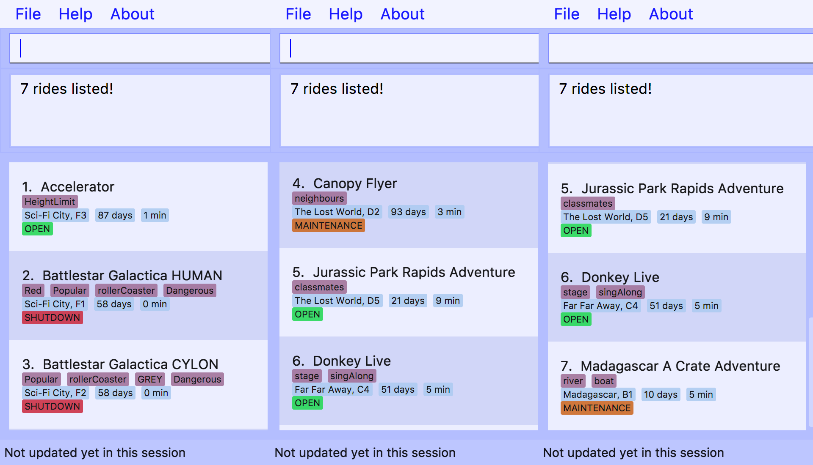

PROJECT: Thane Park
1. Overview
This portfolio is meant to document my work done for my software engineering module in NUS School of Computing,
more specifically the contributions to this project Thane Park.
Thane Park is a desktop application used for managing the rides and attractions in a theme park. The application allows
theme park managers and operators to easily manage their theme park, finding the relevant information they need and updating
the application as they desire using a Command Line Interface (CLI), and it has a Graphical User Interface (GUI) created
with JavaFX, to show them the relevant information about their attractions. It is written in Java and has about 10 kLoc.
My role in the project is to manage the tests and storage in the application. I have also added and enhanced a couple of
features, namely filter and find.
2. Summary of Contributions
-
Major enhancement: Added the ability to filter data entries stored in the application
-
What it does: This feature allows users to filter entries based on the conditions that they can input.
-
Justification: This feature significantly improves the application as it offers users the ability to look for the rides that they need and do not need to go through each ride in the list that fits their requirements. They can simply specify a range and the application will provide a list of entries that is within the range specified.
-
Highlights: This enhancement introduces a new predicate class,
RideContainsConditionPredicate, to allow users to input a range of values to compare values with the existing data.The attributes of the rides that contains numeric values are also abstracted out to create a new interfaceNumericAttributethat the classesMaintenanceandWaitTimeimplement. This allows the implementation of the predicate classAttributePredicate, which enables it to store the user input and compare the values with theMaintenanceandWaitTimeof a ride class. -
Credits: The
filterfeature is based on the way thefindfeature works, with aRideContainsConditionPredicateinstead of aRideContainsKeywordsPredicateto test the rides.
-
-
Minor enhancement: The
findfeature can now parse "zone" and "tags" in addition to "z/" and "t/". -
Code contributed: [Functional code]
-
Other contributions:
-
Enhancements to the Project:
-
The
findfeature can now searchTags andZones of the rides in addition to the names of the rides -
Refactored
Address BooktoThane Parkin the code.
-
-
Project management: Reviewed Pull Requests(PR) on github: [Reviewed Pull Requests]
-
Documentation:
-
Updated the user guide for the
filterandfindfeatures -
Updated the developer guide for the implementation of the
filterfeature with sequence and activity diagrams of how thefiltercommand executes and works. -
Updated my personal portfolio page
-
-
3. Contributions to the User Guide
Given below are sections I contributed to the User Guide. They showcase my ability to write documentation targeting end-users. |
3.1. Find the relevant list of rides
This section contains all commands related to finding rides that you need at any time.
3.1.1. Finding a particular attraction: find
Find a list of rides that the you need to check on. Case insensitive.
Can only find the name, the zone, and the tags of the attractions.
Format: find <[name] [[tag][keyword]…]>
Must include arguments when finding.
Here are some examples with images to let you follow along.
Examples:
The list of results should be like this if no changes were made to the application (ie. delete or add or update): 


|
3.1.2. Finding rides that fits the given condition: filter
Display all rides that fits the condition in a list. It can only filter conditions that have numeric values i.e.
Maintenance and WaitTime.
Format: filter <tag> <condition> [[tag] [condition]…]
Can include more conditions as desired.
Examples:


|
If a ride is selected, a find or filter is performed, the ride panel will still show the ride that was previously
selected. Future versions will automatically select the first ride on the list and allow you to see information about it
on the BrowserPanel or show the short help menu if no rides are found.
|
4. Contributions to the Developer Guide
Given below are sections I contributed to the Developer Guide. They showcase my ability to write technical documentation and the technical depth of my contributions to the project. |
4.1. Filter Feature
This section documents how filter is implemented and how it works.
4.1.1. Current Implementation
The execution of the filter command is simple and linear as the following activity diagram would show:
The following sequence diagram will show how the filter command works:
The feature is implemented with the help of FilterCommand and AttributePredicate class. When the
ThaneParkParser parses the user input and finds the filter command word filter it calls a new FilterCommandParser to
parse the arguments from the user input.
It checks if there are any of the maintenance or waiting time prefix in the arguments. If any of the prefixes are present,
an AttributePredicate is created with the operator (‘<', ‘>’, '< =' or '> =' or '==') and the NumericAttribute they
are checking for (ie Maintenance or WaitTime). The AttributePredicates are added to a list. The user can add any
amount of predicates that they want, like 3 predicates e.g. filter w/< 50 w/ > 5 m/>10 and the list would contain 3
predicates and if the user decides to input only one predicate, the list will only contain one.
A new RideContainsConditionPredicate is instantiated with the list of AttributePredicates. The FilterCommandParser will
return a new FilterCommand with the RideContainsConditionPredicate in it.
The LogicManager executes the command, and the RideContainsConditionPredicate will be set as the predicate to filter
the list of rides and it will check if the ride fulfils the required predicate(s). The RideContainsConditionPredicate
will test if each ride fulfills the required conditions using this method:
public boolean test(Ride ride) {
return attributePredicates.stream().allMatch(p -> {
NumericAttribute attributeToTest = p.getAttribute();
NumericAttribute rideAttributeToTest = ride.getAttribute(attributeToTest);
return p.test(rideAttributeToTest);
});
}So it should be pretty simple to add new NumericAttributes to the rides like ratings if you wish to with minimal
changes to other classes, as long as relevant methods are added to FilterCommandParser to handle the new NumericAttributes.
After all of the rides in the application are tested, a list of filtered rides would be returned and shown to the user.
4.1.2. Design Considerations
Aspect: Data structure to support filter commands
-
Alternative 1(Current Choice): Abstract attributes that contain numeric values into a separate class and create a AttributePredicate to test the attribute
-
Pros: More numeric attributes can be easily added and minimal changes are required to filter new attributes
-
Cons: More classes would need to be implemented to handle this feature
-
-
Alternative 2: Give the entire string condition to the RideContainsConditionPredicate to test.
-
Pros: Classes do not need to abstracted, and thus would be easier to implement
-
Cons: RideContainsConditionPredicate would carry out parsing functions which would make it less cohesive
-